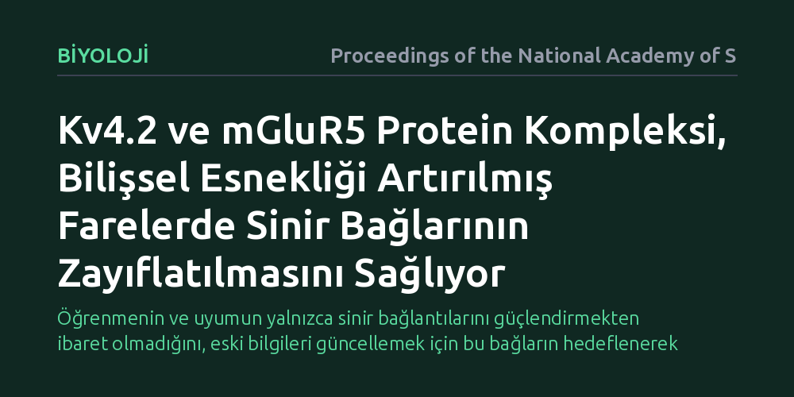

BIYOLOJI · Proceedings of the National Academy of Sciences · 2026-10-25
Araştırmacılar, koşullar değiştiğinde davranışların güncellenmesini sağlayan bilişsel esnekliğin ardındaki sinaptik mekanizmaları fare beyninde inceledi. Kv4.2 potasyum kanalı ile mGluR5 reseptörünün oluşturduğu protein kompleksinin, daha önce güçlenmiş sinapsları zayıflatarak davranışsal uyumu kolaylaştırdığı belirlendi.
Öğrenmenin ve uyumun yalnızca sinir bağlantılarını güçlendirmekten ibaret olmadığını, eski bilgileri güncellemek için bu bağların hedeflenerek zayıflatılmasının da zorunlu olduğunu gösteriyor.

Beynin öğrenme kapasitesi çoğunlukla sinir hücreleri arasındaki bağlantıların, yani sinapsların güçlenmesi üzerinden anlatılır. Ancak hayatta kalmak yalnızca yeni bilgiler edinmeyi değil, çevre koşulları değiştiğinde geçerliliğini yitirmiş eski kuralları terk edebilmeyi de gerektirir. Nörobilimde bilişsel esneklik olarak tanımlanan bu kabiliyet, canlının değişen şartlara hızla ayak uydurmasını ve eski alışkanlıklarını güncelleyebilmesini mümkün kılar.
Eğer sinir hücreleri bağlantılarını sadece sürekli kuvvetlendirseydi, beyindeki sinir ağları kısa sürede doyuma ulaşır ve yeni durumlara tepki veremez hale gelirdi. Bu nedenle bilim insanları uzun süredir şu sorunun cevabını arıyordu: Önceden güçlendirilmiş sinapslar, yeni öğrenmelere alan açmak amacıyla hücresel düzeyde nasıl zayıflatılır? Bu zayıflama mekanizmasındaki aksamalar, takıntılı düşüncelerden karar verme güçlüklerine kadar birçok bilişsel tıkanıklığın temel sebebi olabilir.
Araştırmacılar bu biyolojik bilmeceyi çözmek amacıyla, bilişsel esnekliği genetik olarak artırılmış özel bir fare modelini incelemeye aldı. Deneylerin merkezinde, hafıza oluşumu ve mekânsal yön bulmada kritik görev üstlenen hipokampus ve özellikle bu bölgedeki CA1 piramidal sinir hücreleri yer aldı. Bu hücrelerin dentritik yapıları, binlerce sinapstan gelen kimyasal iletileri toplayıp işleyen temel merkezler konumundadır.
Çalışmada, sinir hücrelerinin elektriksel tepkilerini anlık olarak kaydeden elektrofizyolojik ölçümler ile hücre zarındaki moleküler etkileşimleri belirleyen biyokimyasal deneyler uygulandı. Özellikle sinapsların uzun süreli güçlenmesi sonrasında, bu bağlantıların kontrollü biçimde geriye çekilmesini ifade eden 'depotansiyasyon' olgusunun hangi proteinler vasıtasıyla gerçekleştiği adım adım test edildi.
Elde edilen sonuçlar, bilişsel esnekliği yüksek farelerde sinaps zayıflamasının kendiliğinden oluşan pasif bir yıpranma olmadığını gösterdi. Tam aksine bu süreç, hücre zarında yer alan iki temel proteinin kurduğu özel bir moleküler kompleks tarafından aktif şekilde yönlendiriliyordu: Sinir hücresinin uyarılabilirliğini denetleyen Kv4.2 voltaja duyarlı potasyum kanalı ve glutamat sinyallerini yakalayan mGluR5 reseptörü.
Bu iki protein bir araya gelerek işlevsel bir kompleks oluşturduğunda, daha önce kuvvetlendirilmiş sinapsların gerektiğinde zayıflatılması belirgin şekilde hızlanıyordu. mGluR5 reseptörünün uyarılması ve Kv4.2 kanalının iyon akışını kontrol etmesi, sinapsın aşırı güçlenmiş durumunu geriye çeviriyordu. Bu hücresel geri vites sayesinde sinir ağı esnekliğini koruyor ve değişen çevresel sinyallere yeniden açık hale geliyordu.
Bu bulgu, zihinsel uyum yeteneğinin yalnızca yeni sinirsel bağlar inşa etmekle sınırlı olmadığını, eski bağları hedefe yönelik olarak gevşetebilmenin de en az onun kadar hayati olduğunu ortaya koyuyor. Çalışmanın ifade ettiği gibi, 'bilişsel esneklik, depolanan bilginin değiştirilmesine bağlıdır' ve Kv4.2-mGluR5 kompleksi bu güncelleme sürecinin temel hücresel araçlarından biridir. Bu mekanizma, bilişsel katılığın görüldüğü durumlarda sinirsel devrelerin neden esneyemediğini anlamak için kıymetli bir biyolojik ipucu sunuyor.
Yine de elde edilen sonuçları değerlendirirken temkinli olmak şarttır. Araştırma doğrudan insanlar üzerinde değil, genetik ve çevresel faktörleri laboratuvarda sıkı biçimde kontrol edilen fare modellerinde yürütülmüştür. Bu nedenle aynı moleküler düzeneğin insan beynindeki davranışsal esnekliğe ne ölçüde katkı sunduğunu belirlemek için bağımsız ve ileri düzey klinik araştırmalara ihtiyaç vardır.